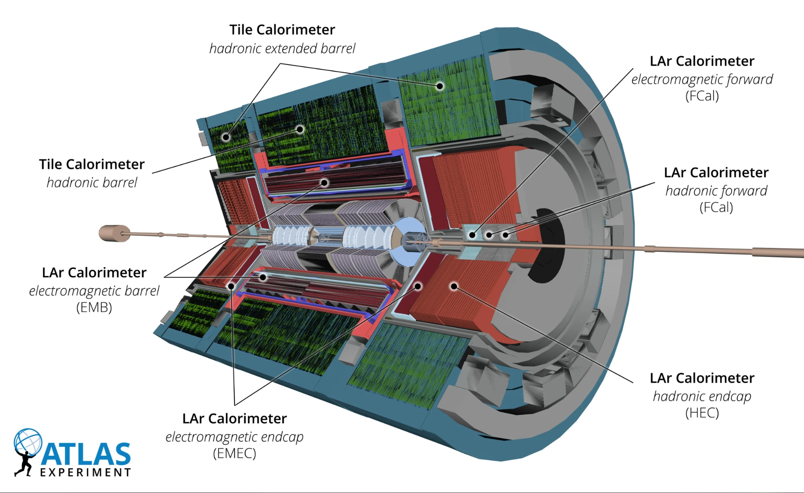
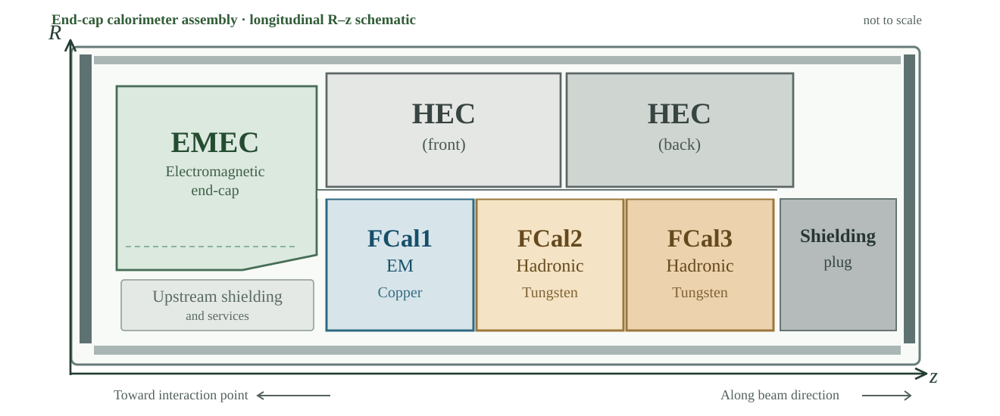
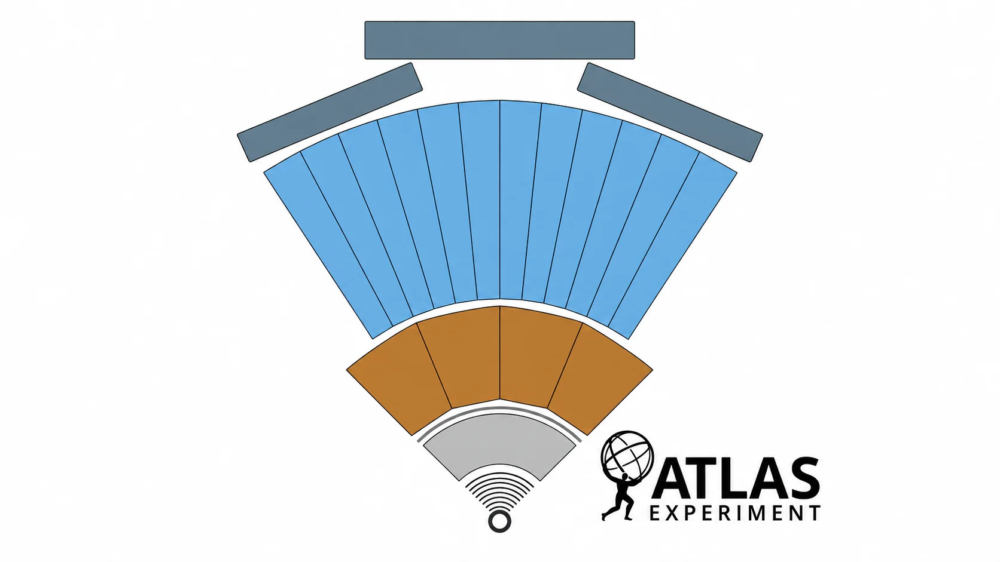
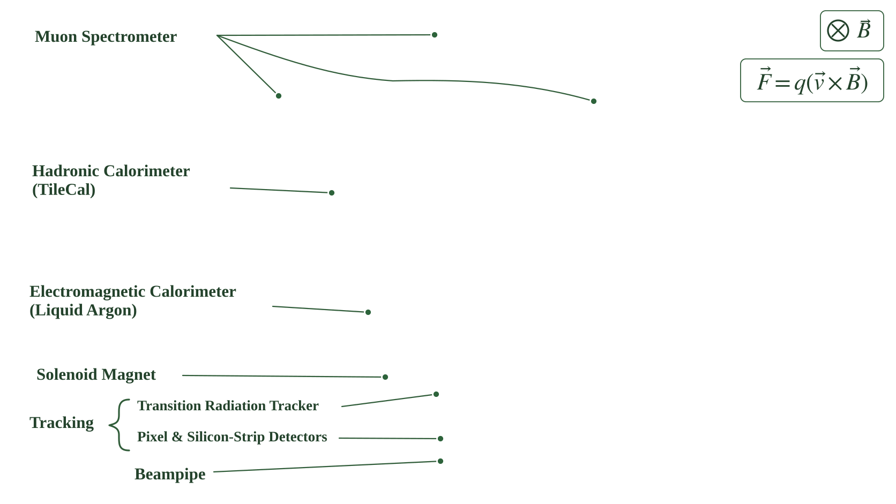
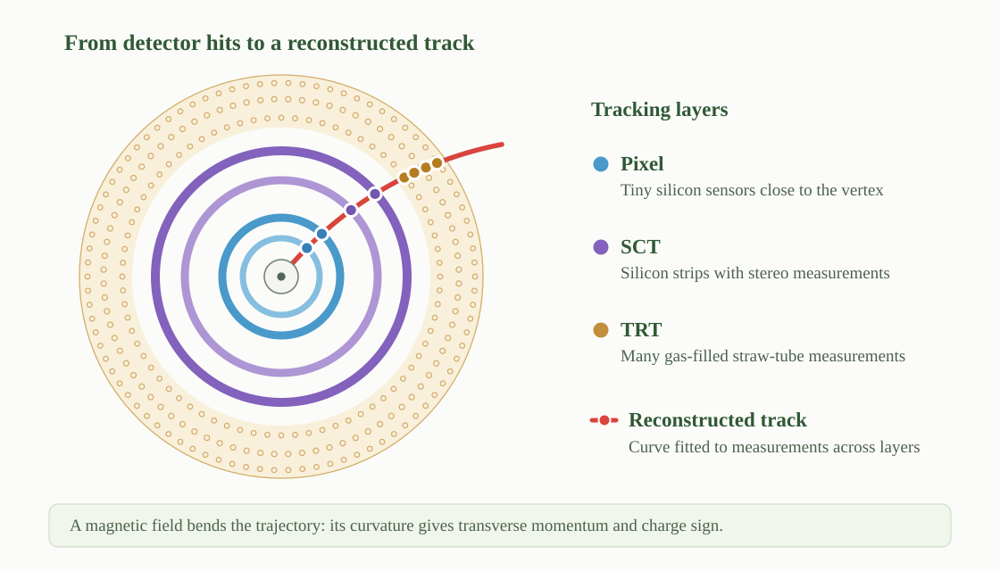
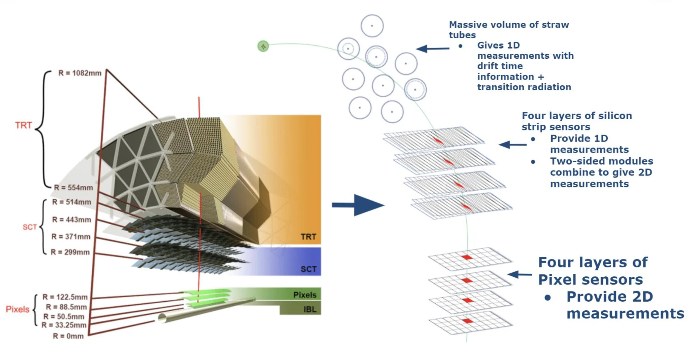
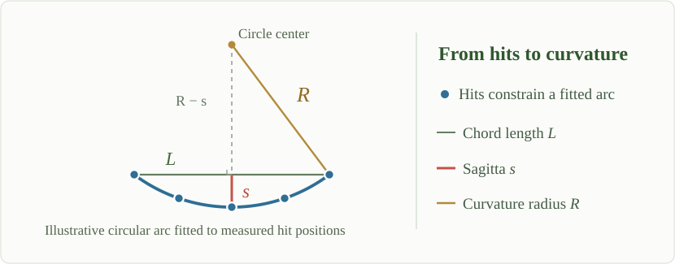
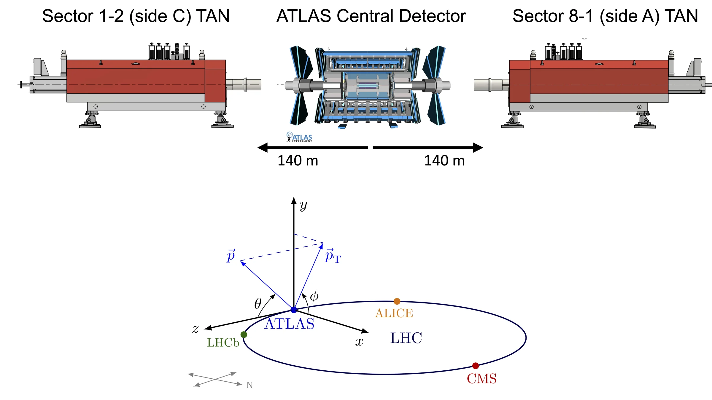
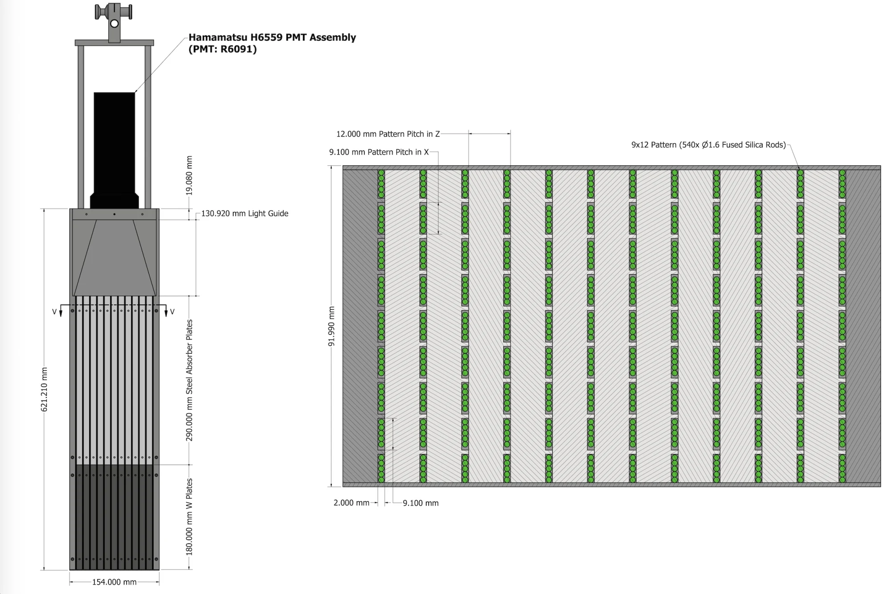

ATLAS Detector
Exploring how ATLAS measures particles at CERN
Overview
The ATLAS detector is a large particle detector at CERN’s Large Hadron Collider. Protons or heavy ions collide near its center, producing particles that travel through several specialized layers. Each layer supplies a different piece of information, helping scientists reconstruct what happened in a collision.
ATLAS is approximately 46 metres long and 25 metres in diameter. The illustration below shows a cutaway of this enormous instrument, revealing systems that would normally be hidden inside its outer structure.
Configuration note: this page describes the ATLAS Run 3 detector, including the Pixel, SCT, and TRT tracking systems used in the analyses discussed below.
Explore the Detector
Choose a subsystem from the image or the component list. The view will focus on that part of the detector and explain what it measures. Select Full Detector to return to the complete cutaway.
Select a subsystem above or in the illustration to see what it measures and why it matters.
Illustration: ATLAS Experiment © CERN, 2022 detector schematic. Focus markers are approximate educational annotations calibrated to this illustration.
Inner Tracking Detector
The first clues are the paths charged particles leave behind.
What it measures: Positions of charged particles moving through a magnetic field.
Why it matters: The curved tracks help reveal particle momenta and where the particles came from.
Electromagnetic Calorimeter
The barrel forms a cylindrical layer. The end-cap calorimeter assemblies also contain electromagnetic sections.
What it measures: Energy deposited by electromagnetic showers from electrons and photons.
Why it matters: Together with tracking information, the deposited energy helps identify electrons and photons. The end-cap assemblies also contain hadronic calorimetry.
Hadronic Calorimeter
Outside the electromagnetic calorimeter sits a much thicker layer built to measure hadronic showers.
What it measures: Energy deposited by hadrons, including protons, neutrons, and particles produced in jets.
Why it matters: Its measurements complement the electromagnetic calorimeter and help reconstruct jets and the total energy balance of a collision.
Solenoid Magnet
A thin superconducting coil encircles the inner tracking detector.
What it does: The solenoid produces a magnetic field that bends charged tracks; it does not directly detect particles.
Why it matters: The bending direction reveals electric charge, while the curvature helps determine momentum.
Barrel Toroid Magnet
Huge superconducting coils wrap around the central ATLAS detector.
What it does: The barrel toroid provides a magnetic field for the surrounding muon spectrometer.
Why it matters: It bends muon trajectories so the outer chambers can measure muon momenta independently of the inner tracker.
End-cap Toroid Magnet
Toroid magnets at both ends of ATLAS extend the magnetic field into the forward regions.
What it does: Like the barrel toroid, these magnets bend charged muons rather than directly recording their energy.
Why it matters: They enable momentum measurements for muons that leave the detector closer to the beam direction.
Muon Chambers
Muons can reach detectors far beyond the calorimeters.
What it measures: Muon trajectories in barrel and end-cap chambers, including the New Small Wheel system.
Why it matters: Together with the magnetic field, these measurements help identify muons and determine their momenta.
How the Detector Works
The innermost tracking system records the paths of charged particles. A magnetic field bends those trajectories, allowing their momenta to be reconstructed. Calorimeters measure the energy deposited by electrons, photons, and hadrons. Farther out, muon chambers record muons that pass through the inner systems. Together, these measurements help reconstruct the particles produced in a collision.
Calorimetry
ATLAS calorimeters measure particle energy by sampling the showers produced as particles pass through alternating absorber and active layers. The system combines a central steel-and-scintillator Tile calorimeter with liquid-argon (LAr) calorimeters covering the electromagnetic, hadronic end-cap, and forward regions.
Select Full Detector to view the official labelled calorimeter cutaway, or choose R–z Layout to examine the longitudinal arrangement near the beam axis.
Full detector calorimeter view

Official ATLAS calorimeter cutaway, Figure 5 of the Run 3 detector paper.
Longitudinal R–z calorimeter layout

Longitudinal R–z schematic of one end-cap, adapted from the 2008 ATLAS detector paper; not to scale.
Figure sources: ATLAS Collaboration, Run 3 detector paper, Figure 5 (ATLAS Collaboration 2024b) · ATLAS Experiment © CERN · Official image. R–z schematic adapted from the ATLAS detector paper, Figure 5.19 (ATLAS Collaboration 2008).
Electromagnetic calorimeters (EMB and EMEC). The LAr electromagnetic barrel (EMB) and electromagnetic end-cap (EMEC) measure showers initiated primarily by electrons and photons. Layers of lead absorbers and liquid argon provide fine spatial sampling of deposited energy.
Tile hadronic calorimeters. A central barrel and two extended barrels use steel absorbers and scintillating tiles to sample hadronic showers. These measure much of the energy carried by strongly interacting particles in the central region.
Hadronic end-cap calorimeters (HEC). Located at larger angles to the beam than the FCal, the HEC uses copper absorbers and liquid argon to measure hadronic energy in the end-cap region.
Forward calorimeters (FCal). Close to the beam axis, the FCal extends coverage to approximately . Each end-cap contains three LAr modules: FCal1 uses copper absorbers for electromagnetic showers, while FCal2 and FCal3 use tungsten absorbers for hadronic showers. In the R–z view, their order along the beam direction is visible alongside the EMEC and HEC modules.
Here, pseudorapidity describes direction relative to the beam: larger corresponds to particles travelling closer to the beam axis.
Follow a Particle
Different particles leave different signatures. For example, an electron usually deposits much of its energy in the electromagnetic calorimeter, while a muon can travel through the calorimeters and reach the outer muon chambers. Choose one or more particles to compare these responses.
Interactive ATLAS Schematic


Field direction: In this transverse view, the solenoidal magnetic field points into the page (⊗). The magnetic force bends negatively and positively charged particles in opposite directions.
Select one or more particles to overlay their conceptual paths through the ATLAS detector.
Animation by Sascha Mehlhase / ATLAS Collaboration © CERN. Based on earlier work by Rebecca Pitt and João Pequenão. View the official CERN source.
Particle-detection schematic: S. Mehlhase / ATLAS Experiment © CERN. Official illustration. The colored paths are conceptual guides, not measured trajectories; their positions are calibrated teaching overlays.
Electron ()
An electron curves rightward in the solenoidal field, then deposits its energy in an electromagnetic shower in the liquid-argon calorimeter.
Typical signature: A right-curving inner-detector track matched to an electromagnetic calorimeter cluster.
Blue solid line: electron track · Branches: electromagnetic shower
Positron ()
A positron bends leftward, opposite to an electron, before producing an electromagnetic shower in the liquid-argon calorimeter.
Typical signature: A left-curving inner-detector track matched to an electromagnetic calorimeter cluster.
Orange solid line: positron track · Branches: electromagnetic shower
Photon ()
A photon has no electric charge, so its flight is straight. It leaves no primary charged track and starts an electromagnetic shower in the liquid-argon calorimeter.
Typical signature: An electromagnetic shower with no matching primary charged-particle track.
Gold dashed straight line: neutral flight · Branches: electromagnetic shower
Charged Hadron ()
A positively charged hadron curves gently left in the solenoid and then mainly deposits its energy in a hadronic calorimeter shower.
Typical signature: A mildly left-curving charged track associated with a hadronic shower.
Teal solid line: positive-hadron track · Branches: hadronic shower
Charged Hadron ()
A negatively charged hadron bends gently rightward in the solenoid and develops most of its shower in the hadronic calorimeter.
Typical signature: A mildly right-curving charged track associated with a hadronic shower.
Red-orange solid line: negative-hadron track · Branches: hadronic shower
Neutral Hadron ()
A neutral hadron travels in a straight line without a primary tracking signal and interacts mainly in the hadronic calorimeter.
Typical signature: A hadronic calorimeter shower without an associated primary charged track.
Green dashed straight line: neutral flight · Branches: hadronic shower
Muon ()
A high-energy negative muon bends gently rightward in the solenoid, passes through both calorimeters with little energy loss, undergoes a modest additional deflection in the muon system, and exits the detector.
Typical signature: A continuing inner-detector trajectory through the outer muon chambers, with no large calorimeter shower.
Purple solid line: continuing · Arrow: muon exits the spectrometer
What Parts of the Detector I Use in My Analysis
My heavy-ion analyses combine charged-particle tracks in the Inner Detector, forward transverse energy in the FCal, and very-forward neutron energy in the Zero Degree Calorimeters (ZDCs). Together, these measurements provide the physics observables, event classification, and pileup rejection used in the analysis.
| Detector region | Measurement used | Role in the analysis |
|---|---|---|
| Inner Detector, | Track , , and | Multiplicity, mean transverse momentum, and flow vectors |
| Forward Calorimeter, | Summed transverse energy, | Event selection and centrality classification |
| Zero Degree Calorimeters, | Very-forward neutron energy, | Pileup rejection using the ZDC–FCal energy correlation |
Inner Detector: Charged-Particle Tracking
The Inner Detector is the main ATLAS system for reconstructing charged particles near midrapidity—the central detector region, away from the beam directions. It provides precision tracking over approximately and surrounds the beam pipe with several nested tracking layers, so particles emerging from the collision leave a sequence of spatial measurements as they move outward through the detector.
Tracking concept

Conceptual tracking illustration (not to scale). The curved track is fitted using measurements from successive detector layers.
Detector-layer details

Pixel sensors provide two-dimensional measurements; stereo SCT modules combine strip measurements; TRT straws provide drift-time measurements and transition-radiation information. Detector geometry: ATLAS Collaboration, detector paper, Figure 4.2. This measurement-principle composite is reproduced in X. Ai et al., ACTS for gaseous tracking detectors (FTCF 2024), slide 6. ATLAS Experiment © CERN.
Momentum Measurement
The interactive curvature diagram is an optional enhancement. The complete derivation remains below.
From detector hits to transverse momentum
1. Fit a curved track. Position measurements across the Pixel, SCT, and TRT layers are combined into a trajectory. The track fit determines its curvature using the known magnetic field. The geometry below explains the basic idea with a circular arc.

Original explanatory SVG. The three-point sagitta construction illustrates the geometry of curvature; ATLAS fits many detector measurements.
2. Determine the curvature radius. For a circle, the chord length and sagitta form a right triangle. The Pythagorean theorem gives
For a small sagitta, , the second term is small, so . Less bending means a smaller sagitta and a larger curvature radius.
3. Convert curvature to momentum. In a uniform magnetic field, the transverse Lorentz force is the force required to bend the transverse momentum:
and in practical high-energy-physics units,
Here is the signed charge number. With and the usual singly charged track assumption (), . The bending direction gives the charge sign; identifying the particle species is not required under this charge assumption.
Educational approximation: the interactive arcs use a uniform 2 T solenoidal field and idealized measurements. Real ATLAS track fits account for magnetic-field variations, measurement uncertainties, material interactions, and multiple scattering. Layer radii follow the ATLAS Inner Detector documentation and published barrel geometry specifications. Field strength: ATLAS Magnet System.
Tracking reconstruction
In broad terms, tracking works in three steps. First, the Pixel detector, the silicon microstrip tracker (SCT), and the transition radiation tracker (TRT) record discrete position measurements, usually called hits. Second, pattern- recognition algorithms identify groups of hits that belong to the same particle and fit them to a common trajectory. Third, because the particle moves in the ATLAS solenoidal magnetic field, the trajectory bends: the amount of curvature determines the transverse momentum , while the direction of curvature identifies the sign of the electric charge. The fitted trajectory also gives the particle’s direction and point of closest approach to the collision vertex.
For my analyses, each reconstructed track supplies its transverse momentum , pseudorapidity , and azimuthal angle . These quantities are used to measure charged-particle multiplicity, event-by-event mean transverse momentum, and flow vectors. The tracking system is therefore the detector element that directly measures the particles entering the core physics observables.
Forward Calorimeters: Event Selection and Centrality
The forward calorimeters measure transverse energy at large pseudorapidity, separated from the midrapidity tracks used in my analysis. Their summed energy defines event-activity or centrality percentiles. The relationship between those percentiles and the overlap geometry of the colliding nuclei is inferred with a Glauber-based collision model rather than measured directly by the FCal.
Using forward energy for event classification and inner-detector tracks for the physics observables helps reduce self-correlations—artificial relationships that can appear when the same particles influence both the event class and the observable. The separation between tracking and forward calorimetry is therefore an important part of the analysis strategy.
Zero Degree Calorimeters: Pileup Rejection
Pileup occurs when more than one Pb+Pb collision is recorded in the same bunch crossing. Signals from those collisions overlap, so the detector can appear to have more activity than was produced by any one collision. This can bias centrality and other event-by-event measurements that assume each recorded event contains a single nuclear collision.
The two Zero Degree Calorimeters are installed about 140 m on either side of the ATLAS interaction point, close to the outgoing beam directions. They measure very-forward neutral particles, primarily spectator neutrons that continue along the beam line after the collision (Avoni et al. 2025).
Each ZDC is a sampling calorimeter. Alternating tungsten absorber plates and fused-silica rods convert the incident neutron’s shower into Cherenkov light, which is directed through a light guide to a photomultiplier tube.
In the Pb+Pb analysis, a genuine single collision follows an expected relationship between the forward-neutron energy recorded in the ZDCs and the FCal . Events with an incompatible combination of ZDC and FCal energy are identified as pileup and removed. The ZDC measurement therefore supports event cleaning rather than entering the final physics observables directly (ATLAS Collaboration 2024a; Avoni et al. 2025).
ZDC location

The upper panel shows the ZDCs housed inside the two TANs (Target Absorbers for Neutrals), 140 m from central ATLAS. Each TAN absorbs the intense flux of very-forward neutral particles and protects downstream LHC magnets. The lower panel defines the ATLAS coordinate system. Source: Run 3 ATLAS ZDC paper, Figure 1.
ZDC detector schematic

Side and top views of a typical ZDC module. The green circles represent the fused-silica Cherenkov rods between the absorber plates. Source: Run 3 ATLAS ZDC paper, Figure 6.